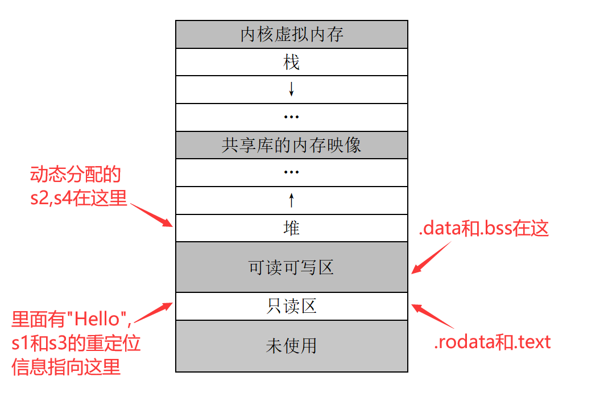
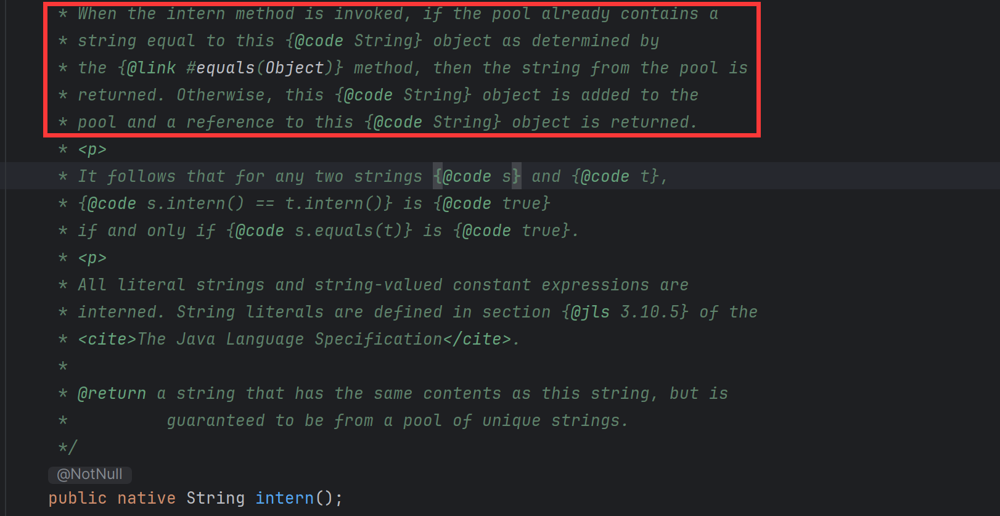

6 String类的常用方法
String 类及其创建¶
String 类的创建¶
String 类是 Java 内置的一个类，其完全限定类名是java.lang.String。想要创建一个字符串有多重方式，比如创建字符串"Hello"：
String 对象在内存中的位置¶
上面的s1,s3存在常量池里，而s2,s4存在堆里。类似于 C 程序的编译，可能编译器在编译String s1 = "Hello"时，将"Hello"存进了可重定位文件的.rodata（只读数据节）中了，并且将这个字符串与s1的联系写进重定位节。s3在编译时预处理，自动计算了"He" + "llo"并也存入.rodata；由于已经有一个"Hello"了，就不再重复加入"Hello"，而是直接将s3与之前的那个"Hello"进行重定位。
s2,s4都是通过new一个新的字符串对象得到的，这个就好比C语言的malloc，分配的空间在内存的堆中。

s5也是存在常量池里，和s1,s3一样。intern是String类的一个实例方法，返回字符串对象的字面量。下面是这个方法的 API 注释：

从框起来的部分可以看到，intern方法对于str2=str1.intern()处理在内存分配上有两种情况：
str1的字面量已经在常量池里，则直接让str2指向它。此时有str1==str2。str1的字面量不在常量池里，这时str1肯定是在堆里面分配的，JVM会把str1的字面量存入常量池，再令str2指向它。
所以不管怎么说，通过intern方法得到的引用对象，始终指向常量池。
String 类的一些常用方法¶
字符串比较¶
equals。s1.equals(s2)比较s1与s2的字面量，如果字面量相等就返回true，否则是false。如果s2==null也是返回false。在 Java 中由于所有非基本数据类型的变量都是引用变量，
s1==s2这一语句其实是在判断s1和s2是否指向同一个内存区。相当于 C 语言中两个指针的==操作。equalsIgnoreCase。忽略大小写的比较。regionMatches。比较部分内容是否相同，这个函数有两个重载的写法：regionMatches(int toffset,String other,int ooffset,int len)。调用s1的该方法，比较s1[toffset]和other[ooffset]开始的len个字符是否都相等；如果都相等返回true，否则false。regionMatches(boolean ignoreCase, int toffset,String other, int ooffset, int len)。和上面那个方法用法类似，只是当ignoreCase==true时比较的时候忽略大小写。
startsWith(s1)判断是否以字符串s1开始。endsWith(s1)判断是否以字符串s1结束。compareTo方法用于比较两个字符串的大小，即第一个不同字符的差值（字典序）。
字符串的长度¶
使用length()方法可以返回字符串的长度。注意数组获取长度是length成员，两者不一样。
获取特定位置的字符¶
如果是 C 语言直接就是s[index]了，但是 Java 要用s.charAt(index)。
连接字符串¶
可以直接用加法连接：
concat
s1,s2的值。连接操作返回的是一个独立于s1,s2的新的字符串。
截取字符串¶
调用subString方法。有两个重载的subString方法：
substring(int beginIndex, int endIndex)返回从beginIndex到endIndex-1的片段。substring(int beginIndex)返回从beginIndex到末尾的片段。
字符串转换¶
s1.toLowerCase()将s1转换成小写形式，得到新串。s1.toUpperCase()将s1转换成大写形式，得到新串。s1.trim()删除s1两端的空格，得到新串。s1.replace(oldChars,newChars)用串newChars替换s1中的所有子串oldChaes，得到新串。
查找字符和字符串¶
indexOf返回字符串中字符或字符串匹配的位置，返回-1表示未找到。indexOf还能加一个参数fromIndex，或者加两个参数beginIndex,endIndex，表示在特定的区间寻找字符/字符串。lastIndexOf从字符串末尾开始查找。
字符数组与字符串的转换¶
- 字符串到字符数组，用
toCharArray。 - 字符数组到字符串，用构造函数，或者静态方法
valueOf：
基本数据类型和字符串间的转换¶
valueOf方法将基本数据类型转换为字符串- 字符串转换为基本类型：利用包装类